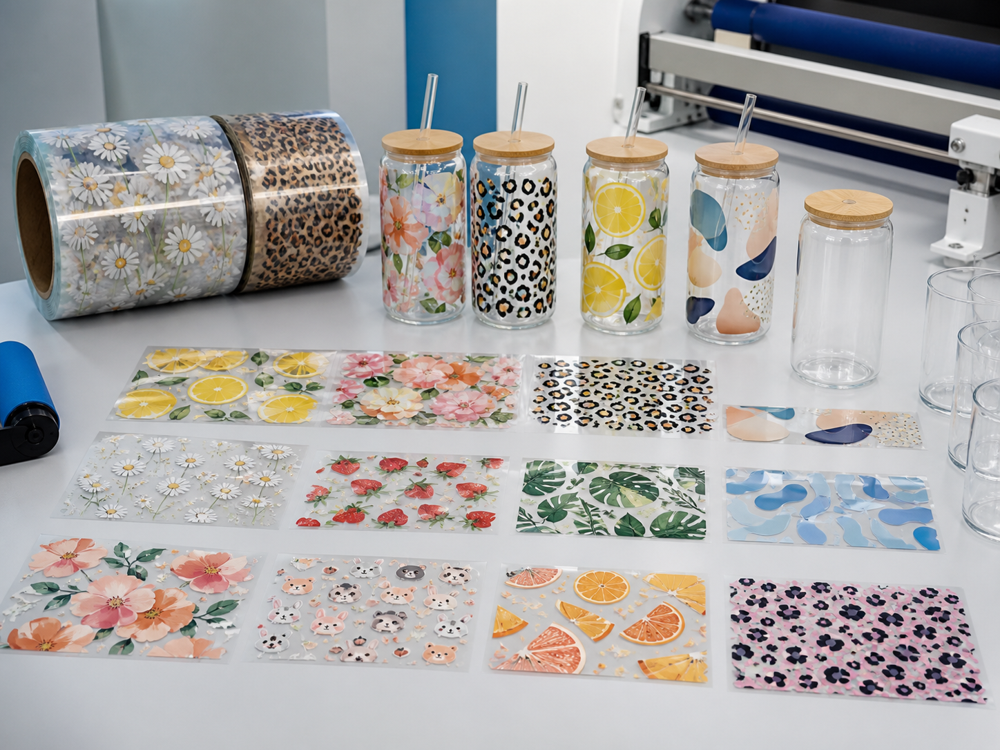
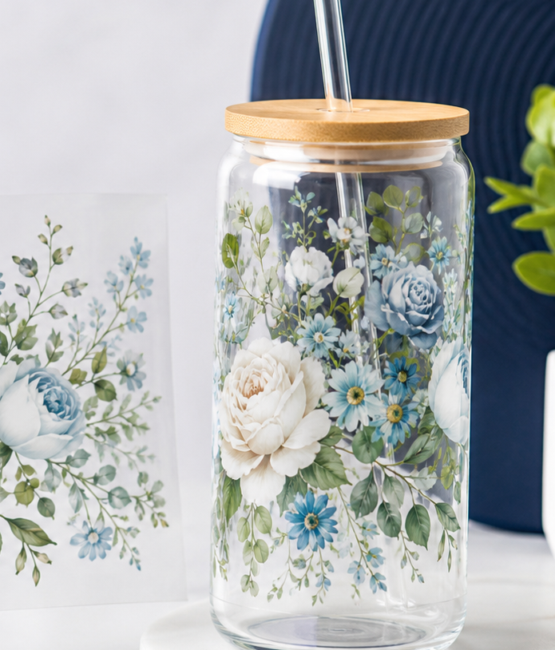
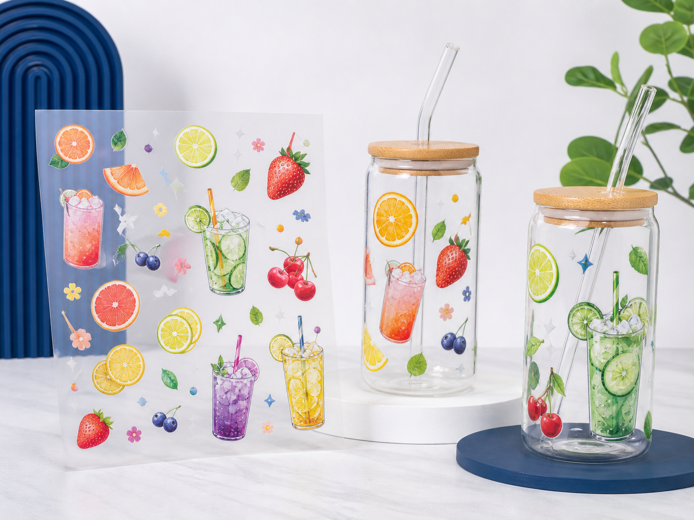
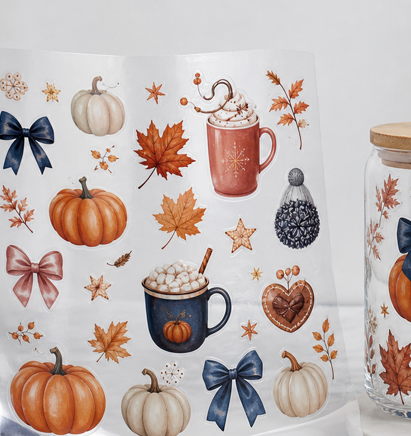

Custom UV DTF Cup Transfers
Factory-direct UV DTF transfer stickers for tumblers, glass cups, jars and promotional drinkware. Send your artwork or reference style, and RP will help with material advice, sheet layout and free digital proof.

UV DTF Transfers for Cups, Tumblers and Jars
UV DTF cup transfers are useful for drinkware brands, gift companies, promotional product sellers, beverage merch projects and small businesses that need colorful transfer stickers without complicated retail configuration.
RP supports OEM designs, assorted transfer sheet layouts, sample packs and bulk production. You can start with size, quantity, cup type, artwork file or even a reference image.

Common UV DTF Cup Transfer Projects
Floral Cup Wrap Transfers
Botanical, flower and boutique-style cup transfer designs for glass tumblers and gift drinkware.
Fruit Drink Tumbler Stickers
Bright fruit, juice, smoothie and summer cup decal styles for beverage and promotional projects.
Seasonal Transfer Sheets
Holiday, event and seasonal artwork arranged as assorted UV DTF transfer sheets.
Brand Logo Cup Decals
Custom logo transfers for cafes, drink shops, launch events and private label drinkware.
Bulk Transfer Sticker Sheets
Multiple designs arranged on production sheets for overseas sellers and repeat B2B orders.
Gift and Promotional Cups
Custom transfer stickers for gift companies, party suppliers and promotional product buyers.
What You Can Customize
Artwork and Layout
- Logo or original artwork
- Single design or assorted sheet
- Cup wrap size
- Sticker placement guide
Production Format
- Transfer sticker sheets
- Sample packs
- Bulk production sheets
- Individual cut pieces by request
Buyer Support
- Free digital proof
- Low MOQ available
- One-to-one WhatsApp support
- Worldwide shipping
UV DTF Cup Transfer Examples



UV DTF Cup Transfer FAQ
Start a Custom UV DTF Cup Transfer Project
Send your artwork, cup size and quantity. RP will help prepare a free digital proof and production suggestion.
Chat on WhatsApp for UV DTF Quote